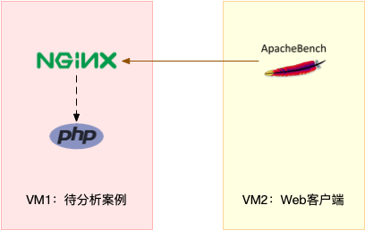
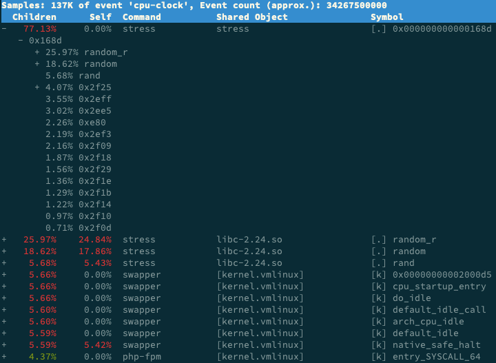

- 00 开篇词 别再让Linux性能问题成为你的绊脚石.md.html
- 01 如何学习Linux性能优化？.md.html
- 02 基础篇：到底应该怎么理解“平均负载”？.md.html
- 03 基础篇：经常说的 CPU 上下文切换是什么意思？（上）.md.html
- 04 基础篇：经常说的 CPU 上下文切换是什么意思？（下）.md.html
- 05 基础篇：某个应用的CPU使用率居然达到100%，我该怎么办？.md.html
- 06 案例篇：系统的 CPU 使用率很高，但为啥却找不到高 CPU 的应用？.md.html
- 07 案例篇：系统中出现大量不可中断进程和僵尸进程怎么办？（上）.md.html
- 08 案例篇：系统中出现大量不可中断进程和僵尸进程怎么办？（下）.md.html
- 09 基础篇：怎么理解Linux软中断？.md.html
- 10 案例篇：系统的软中断CPU使用率升高，我该怎么办？.md.html
- 11 套路篇：如何迅速分析出系统CPU的瓶颈在哪里？.md.html
- 12 套路篇：CPU 性能优化的几个思路.md.html
- 13 答疑（一）：无法模拟出 RES 中断的问题，怎么办？.md.html
- 14 答疑（二）：如何用perf工具分析Java程序？.md.html
- 15 基础篇：Linux内存是怎么工作的？.md.html
- 16 基础篇：怎么理解内存中的Buffer和Cache？.md.html
- 17 案例篇：如何利用系统缓存优化程序的运行效率？.md.html
- 18 案例篇：内存泄漏了，我该如何定位和处理？.md.html
- 19 案例篇：为什么系统的Swap变高了（上）.md.html
- 20 案例篇：为什么系统的Swap变高了？（下）.md.html
- 21 套路篇：如何“快准狠”找到系统内存的问题？.md.html
- 22 答疑（三）：文件系统与磁盘的区别是什么？.md.html
- 23 基础篇：Linux 文件系统是怎么工作的？.md.html
- 24 基础篇：Linux 磁盘I_O是怎么工作的（上）.md.html
- 25 基础篇：Linux 磁盘I_O是怎么工作的（下）.md.html
- 26 案例篇：如何找出狂打日志的“内鬼”？.md.html
- 27 案例篇：为什么我的磁盘I_O延迟很高？.md.html
- 28 案例篇：一个SQL查询要15秒，这是怎么回事？.md.html
- 29 案例篇：Redis响应严重延迟，如何解决？.md.html
- 30 套路篇：如何迅速分析出系统I_O的瓶颈在哪里？.md.html
- 31 套路篇：磁盘 I_O 性能优化的几个思路.md.html
- 32 答疑（四）：阻塞、非阻塞 I_O 与同步、异步 I_O 的区别和联系.md.html
- 33 关于 Linux 网络，你必须知道这些（上）.md.html
- 34 关于 Linux 网络，你必须知道这些（下）.md.html
- 35 基础篇：C10K 和 C1000K 回顾.md.html
- 36 套路篇：怎么评估系统的网络性能？.md.html
- 37 案例篇：DNS 解析时快时慢，我该怎么办？.md.html
- 38 案例篇：怎么使用 tcpdump 和 Wireshark 分析网络流量？.md.html
- 39 案例篇：怎么缓解 DDoS 攻击带来的性能下降问题？.md.html
- 40 案例篇：网络请求延迟变大了，我该怎么办？.md.html
- 41 案例篇：如何优化 NAT 性能？（上）.md.html
- 42 案例篇：如何优化 NAT 性能？（下）.md.html
- 43 套路篇：网络性能优化的几个思路（上）.md.html
- 44 套路篇：网络性能优化的几个思路（下）.md.html
- 45 答疑（五）：网络收发过程中，缓冲区位置在哪里？.md.html
- 46 案例篇：为什么应用容器化后，启动慢了很多？.md.html
- 47 案例篇：服务器总是时不时丢包，我该怎么办？（上）.md.html
- 48 案例篇：服务器总是时不时丢包，我该怎么办？（下）.md.html
- 49 案例篇：内核线程 CPU 利用率太高，我该怎么办？.md.html
- 50 案例篇：动态追踪怎么用？（上）.md.html
- 51 案例篇：动态追踪怎么用？（下）.md.html
- 52 案例篇：服务吞吐量下降很厉害，怎么分析？.md.html
- 53 套路篇：系统监控的综合思路.md.html
- 54 套路篇：应用监控的一般思路.md.html
- 55 套路篇：分析性能问题的一般步骤.md.html
- 56 套路篇：优化性能问题的一般方法.md.html
- 57 套路篇：Linux 性能工具速查.md.html
- 58 答疑（六）：容器冷启动如何性能分析？.md.html
- 加餐（一） 书单推荐：性能优化和Linux 系统原理.md.html
- 加餐（二） 书单推荐：网络原理和 Linux 内核实现.md.html
- 用户故事 “半路出家 ”，也要顺利拿下性能优化！.md.html
- 用户故事 运维和开发工程师们怎么说？.md.html
- 结束语 愿你攻克性能难关.md.html
- 捐赠
06 案例篇：系统的 CPU 使用率很高，但为啥却找不到高 CPU 的应用？
你好，我是倪朋飞。
上一节我讲了 CPU 使用率是什么，并通过一个案例教你使用 top、vmstat、pidstat 等工具，排查高 CPU 使用率的进程，然后再使用 perf top 工具，定位应用内部函数的问题。不过就有人留言了，说似乎感觉高 CPU 使用率的问题，还是挺容易排查的。
那是不是所有 CPU 使用率高的问题，都可以这么分析呢？我想，你的答案应该是否定的。
回顾前面的内容，我们知道，系统的 CPU 使用率，不仅包括进程用户态和内核态的运行，还包括中断处理、等待 I/O 以及内核线程等。所以，当你发现系统的 CPU 使用率很高的时候，不一定能找到相对应的高 CPU 使用率的进程。
今天，我就用一个 Nginx + PHP 的 Web 服务的案例，带你来分析这种情况。
案例分析
你的准备
今天依旧探究系统CPU使用率高的情况，所以这次实验的准备工作，与上节课的准备工作基本相同，差别在于案例所用的 Docker 镜像不同。
本次案例还是基于 Ubuntu 18.04，同样适用于其他的 Linux 系统。我使用的案例环境如下所示：
机器配置：2 CPU，8GB 内存
预先安装 docker、sysstat、perf、ab 等工具，如 apt install docker.io sysstat linux-tools-common apache2-utils
前面我们讲到过，ab（apache bench）是一个常用的 HTTP 服务性能测试工具，这里同样用来模拟 Nginx 的客户端。由于 Nginx 和 PHP 的配置比较麻烦，我把它们打包成了两个 Docker 镜像，这样只需要运行两个容器，就可以得到模拟环境。
注意，这个案例要用到两台虚拟机，如下图所示：

你可以看到，其中一台用作 Web 服务器，来模拟性能问题；另一台用作 Web 服务器的客户端，来给 Web 服务增加压力请求。使用两台虚拟机是为了相互隔离，避免“交叉感染”。
接下来，我们打开两个终端，分别 SSH 登录到两台机器上，并安装上述工具。
同样注意，下面所有命令都默认以 root 用户运行，如果你是用普通用户身份登陆系统，请运行 sudo su root 命令切换到 root 用户。
走到这一步，准备工作就完成了。接下来，我们正式进入操作环节。
温馨提示：案例中 PHP 应用的核心逻辑比较简单，你可能一眼就能看出问题，但实际生产环境中的源码就复杂多了。所以，我依旧建议，操作之前别看源码，避免先入为主，而要把它当成一个黑盒来分析。这样，你可以更好把握，怎么从系统的资源使用问题出发，分析出瓶颈所在的应用，以及瓶颈在应用中大概的位置。
操作和分析
首先，我们在第一个终端，执行下面的命令运行 Nginx 和 PHP 应用：
$ docker run --name nginx -p 10000:80 -itd feisky/nginx:sp
$ docker run --name phpfpm -itd --network container:nginx feisky/php-fpm:sp
然后，在第二个终端，使用 curl 访问 http://[VM1的IP]:10000，确认 Nginx 已正常启动。你应该可以看到 It works! 的响应。
# 192.168.0.10是第一台虚拟机的IP地址
$ curl http://192.168.0.10:10000/
It works!
接着，我们来测试一下这个 Nginx 服务的性能。在第二个终端运行下面的 ab 命令。要注意，与上次操作不同的是，这次我们需要并发100个请求测试Nginx性能，总共测试1000个请求。
# 并发100个请求测试Nginx性能，总共测试1000个请求
$ ab -c 100 -n 1000 http://192.168.0.10:10000/
This is ApacheBench, Version 2.3 <$Revision: 1706008 $>
Copyright 1996 Adam Twiss, Zeus Technology Ltd,
...
Requests per second: 87.86 [#/sec] (mean)
Time per request: 1138.229 [ms] (mean)
...
从ab的输出结果我们可以看到，Nginx能承受的每秒平均请求数，只有 87 多一点，是不是感觉它的性能有点差呀。那么，到底是哪里出了问题呢？我们再用 top 和 pidstat 来观察一下。
这次，我们在第二个终端，将测试的并发请求数改成5，同时把请求时长设置为10分钟（-t 600）。这样，当你在第一个终端使用性能分析工具时， Nginx 的压力还是继续的。
继续在第二个终端运行 ab 命令：
$ ab -c 5 -t 600 http://192.168.0.10:10000/
然后，我们在第一个终端运行 top 命令，观察系统的 CPU 使用情况：
$ top
...
%Cpu(s): 80.8 us, 15.1 sy, 0.0 ni, 2.8 id, 0.0 wa, 0.0 hi, 1.3 si, 0.0 st
...
PID USER PR NI VIRT RES SHR S %CPU %MEM TIME+ COMMAND
6882 root 20 0 8456 5052 3884 S 2.7 0.1 0:04.78 docker-containe
6947 systemd+ 20 0 33104 3716 2340 S 2.7 0.0 0:04.92 nginx
7494 daemon 20 0 336696 15012 7332 S 2.0 0.2 0:03.55 php-fpm
7495 daemon 20 0 336696 15160 7480 S 2.0 0.2 0:03.55 php-fpm
10547 daemon 20 0 336696 16200 8520 S 2.0 0.2 0:03.13 php-fpm
10155 daemon 20 0 336696 16200 8520 S 1.7 0.2 0:03.12 php-fpm
10552 daemon 20 0 336696 16200 8520 S 1.7 0.2 0:03.12 php-fpm
15006 root 20 0 1168608 66264 37536 S 1.0 0.8 9:39.51 dockerd
4323 root 20 0 0 0 0 I 0.3 0.0 0:00.87 kworker/u4:1
...
观察 top 输出的进程列表可以发现，CPU 使用率最高的进程也只不过才 2.7%，看起来并不高。
然而，再看系统 CPU 使用率（ %Cpu ）这一行，你会发现，系统的整体 CPU 使用率是比较高的：用户 CPU 使用率（us）已经到了 80%，系统 CPU 为 15.1%，而空闲 CPU （id）则只有 2.8%。
为什么用户 CPU 使用率这么高呢？我们再重新分析一下进程列表，看看有没有可疑进程：
docker-containerd 进程是用来运行容器的，2.7% 的 CPU 使用率看起来正常；
Nginx 和 php-fpm 是运行 Web 服务的，它们会占用一些 CPU 也不意外，并且 2% 的 CPU 使用率也不算高；
再往下看，后面的进程呢，只有 0.3% 的 CPU 使用率，看起来不太像会导致用户 CPU 使用率达到 80%。
那就奇怪了，明明用户 CPU 使用率都80%了，可我们挨个分析了一遍进程列表，还是找不到高 CPU 使用率的进程。看来top是不管用了，那还有其他工具可以查看进程 CPU 使用情况吗？不知道你记不记得我们的老朋友 pidstat，它可以用来分析进程的 CPU 使用情况。
接下来，我们还是在第一个终端，运行 pidstat 命令：
# 间隔1秒输出一组数据（按Ctrl+C结束）
$ pidstat 1
...
04:36:24 UID PID %usr %system %guest %wait %CPU CPU Command
04:36:25 0 6882 1.00 3.00 0.00 0.00 4.00 0 docker-containe
04:36:25 101 6947 1.00 2.00 0.00 1.00 3.00 1 nginx
04:36:25 1 14834 1.00 1.00 0.00 1.00 2.00 0 php-fpm
04:36:25 1 14835 1.00 1.00 0.00 1.00 2.00 0 php-fpm
04:36:25 1 14845 0.00 2.00 0.00 2.00 2.00 1 php-fpm
04:36:25 1 14855 0.00 1.00 0.00 1.00 1.00 1 php-fpm
04:36:25 1 14857 1.00 2.00 0.00 1.00 3.00 0 php-fpm
04:36:25 0 15006 0.00 1.00 0.00 0.00 1.00 0 dockerd
04:36:25 0 15801 0.00 1.00 0.00 0.00 1.00 1 pidstat
04:36:25 1 17084 1.00 0.00 0.00 2.00 1.00 0 stress
04:36:25 0 31116 0.00 1.00 0.00 0.00 1.00 0 atopacctd
...
观察一会儿，你是不是发现，所有进程的 CPU 使用率也都不高啊，最高的 Docker 和 Nginx 也只有 4% 和 3%，即使所有进程的 CPU 使用率都加起来，也不过是 21%，离 80% 还差得远呢！
最早的时候，我碰到这种问题就完全懵了：明明用户 CPU 使用率已经高达 80%，但我却怎么都找不到是哪个进程的问题。到这里，你也可以想想，你是不是也遇到过这种情况？还能不能再做进一步的分析呢？
后来我发现，会出现这种情况，很可能是因为前面的分析漏了一些关键信息。你可以先暂停一下，自己往上翻，重新操作检查一遍。或者，我们一起返回去分析 top 的输出，看看能不能有新发现。
现在，我们回到第一个终端，重新运行 top 命令，并观察一会儿：
$ top
top - 04:58:24 up 14 days, 15:47, 1 user, load average: 3.39, 3.82, 2.74
Tasks: 149 total, 6 running, 93 sleeping, 0 stopped, 0 zombie
%Cpu(s): 77.7 us, 19.3 sy, 0.0 ni, 2.0 id, 0.0 wa, 0.0 hi, 1.0 si, 0.0 st
KiB Mem : 8169348 total, 2543916 free, 457976 used, 5167456 buff/cache
KiB Swap: 0 total, 0 free, 0 used. 7363908 avail Mem
PID USER PR NI VIRT RES SHR S %CPU %MEM TIME+ COMMAND
6947 systemd+ 20 0 33104 3764 2340 S 4.0 0.0 0:32.69 nginx
6882 root 20 0 12108 8360 3884 S 2.0 0.1 0:31.40 docker-containe
15465 daemon 20 0 336696 15256 7576 S 2.0 0.2 0:00.62 php-fpm
15466 daemon 20 0 336696 15196 7516 S 2.0 0.2 0:00.62 php-fpm
15489 daemon 20 0 336696 16200 8520 S 2.0 0.2 0:00.62 php-fpm
6948 systemd+ 20 0 33104 3764 2340 S 1.0 0.0 0:00.95 nginx
15006 root 20 0 1168608 65632 37536 S 1.0 0.8 9:51.09 dockerd
15476 daemon 20 0 336696 16200 8520 S 1.0 0.2 0:00.61 php-fpm
15477 daemon 20 0 336696 16200 8520 S 1.0 0.2 0:00.61 php-fpm
24340 daemon 20 0 8184 1616 536 R 1.0 0.0 0:00.01 stress
24342 daemon 20 0 8196 1580 492 R 1.0 0.0 0:00.01 stress
24344 daemon 20 0 8188 1056 492 R 1.0 0.0 0:00.01 stress
24347 daemon 20 0 8184 1356 540 R 1.0 0.0 0:00.01 stress
...
这次从头开始看 top 的每行输出，咦？Tasks 这一行看起来有点奇怪，就绪队列中居然有 6 个 Running 状态的进程（6 running），是不是有点多呢？
回想一下 ab 测试的参数，并发请求数是 5。再看进程列表里， php-fpm 的数量也是 5，再加上 Nginx，好像同时有 6 个进程也并不奇怪。但真的是这样吗？
再仔细看进程列表，这次主要看 Running（R） 状态的进程。你有没有发现， Nginx 和所有的 php-fpm 都处于Sleep（S）状态，而真正处于 Running（R）状态的，却是几个 stress 进程。这几个 stress 进程就比较奇怪了，需要我们做进一步的分析。
我们还是使用 pidstat 来分析这几个进程，并且使用 -p 选项指定进程的 PID。首先，从上面 top 的结果中，找到这几个进程的 PID。比如，先随便找一个 24344，然后用 pidstat 命令看一下它的 CPU 使用情况：
$ pidstat -p 24344
16:14:55 UID PID %usr %system %guest %wait %CPU CPU Command
奇怪，居然没有任何输出。难道是pidstat 命令出问题了吗？之前我说过，在怀疑性能工具出问题前，最好还是先用其他工具交叉确认一下。那用什么工具呢？ ps 应该是最简单易用的。我们在终端里运行下面的命令，看看 24344 进程的状态：
# 从所有进程中查找PID是24344的进程
$ ps aux | grep 24344
root 9628 0.0 0.0 14856 1096 pts/0 S+ 16:15 0:00 grep --color=auto 24344
还是没有输出。现在终于发现问题，原来这个进程已经不存在了，所以 pidstat 就没有任何输出。既然进程都没了，那性能问题应该也跟着没了吧。我们再用 top 命令确认一下：
$ top
...
%Cpu(s): 80.9 us, 14.9 sy, 0.0 ni, 2.8 id, 0.0 wa, 0.0 hi, 1.3 si, 0.0 st
...
PID USER PR NI VIRT RES SHR S %CPU %MEM TIME+ COMMAND
6882 root 20 0 12108 8360 3884 S 2.7 0.1 0:45.63 docker-containe
6947 systemd+ 20 0 33104 3764 2340 R 2.7 0.0 0:47.79 nginx
3865 daemon 20 0 336696 15056 7376 S 2.0 0.2 0:00.15 php-fpm
6779 daemon 20 0 8184 1112 556 R 0.3 0.0 0:00.01 stress
...
好像又错了。结果还跟原来一样，用户 CPU 使用率还是高达 80.9%，系统 CPU 接近 15%，而空闲 CPU 只有 2.8%，Running 状态的进程有 Nginx、stress等。
可是，刚刚我们看到stress 进程不存在了，怎么现在还在运行呢？再细看一下 top 的输出，原来，这次 stress 进程的 PID 跟前面不一样了，原来的 PID 24344 不见了，现在的是 6779。
进程的 PID 在变，这说明什么呢？在我看来，要么是这些进程在不停地重启，要么就是全新的进程，这无非也就两个原因：
第一个原因，进程在不停地崩溃重启，比如因为段错误、配置错误等等，这时，进程在退出后可能又被监控系统自动重启了。
第二个原因，这些进程都是短时进程，也就是在其他应用内部通过 exec 调用的外面命令。这些命令一般都只运行很短的时间就会结束，你很难用 top 这种间隔时间比较长的工具发现（上面的案例，我们碰巧发现了）。
至于 stress，我们前面提到过，它是一个常用的压力测试工具。它的 PID 在不断变化中，看起来像是被其他进程调用的短时进程。要想继续分析下去，还得找到它们的父进程。
要怎么查找一个进程的父进程呢？没错，用 pstree 就可以用树状形式显示所有进程之间的关系：
$ pstree | grep stress
|-docker-containe-+-php-fpm-+-php-fpm---sh---stress
| |-3*[php-fpm---sh---stress---stress]
从这里可以看到，stress 是被 php-fpm 调用的子进程，并且进程数量不止一个（这里是3个）。找到父进程后，我们能进入 app 的内部分析了。
首先，当然应该去看看它的源码。运行下面的命令，把案例应用的源码拷贝到 app 目录，然后再执行 grep 查找是不是有代码再调用 stress 命令：
# 拷贝源码到本地
$ docker cp phpfpm:/app .
# grep 查找看看是不是有代码在调用stress命令
$ grep stress -r app
app/index.php:// fake I/O with stress (via write()/unlink()).
app/index.php:$result = exec("/usr/local/bin/stress -t 1 -d 1 2>&1", $output, $status);
找到了，果然是 app/index.php 文件中直接调用了 stress 命令。
再来看看 app/index.php 的源代码：
$ cat app/index.php
<?php
// fake I/O with stress (via write()/unlink()).
$result = exec("/usr/local/bin/stress -t 1 -d 1 2>&1", $output, $status);
if (isset($_GET["verbose"]) && $_GET["verbose"]==1 && $status != 0) {
echo "Server internal error: ";
print_r($output);
} else {
echo "It works!";
}
?>
可以看到，源码里对每个请求都会调用一个 stress 命令，模拟 I/O 压力。从注释上看，stress 会通过 write() 和 unlink() 对 I/O 进程进行压测，看来，这应该就是系统 CPU 使用率升高的根源了。
不过，stress 模拟的是 I/O 压力，而之前在 top 的输出中看到的，却一直是用户 CPU 和系统 CPU 升高，并没见到 iowait 升高。这又是怎么回事呢？stress 到底是不是 CPU 使用率升高的原因呢？
我们还得继续往下走。从代码中可以看到，给请求加入 verbose=1 参数后，就可以查看 stress 的输出。你先试试看，在第二个终端运行：
$ curl http://192.168.0.10:10000?verbose=1
Server internal error: Array
(
[0] => stress: info: [19607] dispatching hogs: 0 cpu, 0 io, 0 vm, 1 hdd
[1] => stress: FAIL: [19608] (563) mkstemp failed: Permission denied
[2] => stress: FAIL: [19607] (394) <-- worker 19608 returned error 1
[3] => stress: WARN: [19607] (396) now reaping child worker processes
[4] => stress: FAIL: [19607] (400) kill error: No such process
[5] => stress: FAIL: [19607] (451) failed run completed in 0s
)
看错误消息 mkstemp failed: Permission denied ，以及 failed run completed in 0s。原来 stress 命令并没有成功，它因为权限问题失败退出了。看来，我们发现了一个 PHP 调用外部 stress 命令的 bug：没有权限创建临时文件。
从这里我们可以猜测，正是由于权限错误，大量的 stress 进程在启动时初始化失败，进而导致用户 CPU 使用率的升高。
分析出问题来源，下一步是不是就要开始优化了呢？当然不是！既然只是猜测，那就需要再确认一下，这个猜测到底对不对，是不是真的有大量的 stress 进程。该用什么工具或指标呢？
我们前面已经用了 top、pidstat、pstree 等工具，没有发现大量的 stress 进程。那么，还有什么其他的工具可以用吗？
还记得上一期提到的 perf 吗？它可以用来分析 CPU 性能事件，用在这里就很合适。依旧在第一个终端中运行 perf record -g 命令 ，并等待一会儿（比如15秒）后按 Ctrl+C 退出。然后再运行 perf report 查看报告：
# 记录性能事件，等待大约15秒后按 Ctrl+C 退出
$ perf record -g
# 查看报告
$ perf report
这样，你就可以看到下图这个性能报告：

你看，stress 占了所有CPU时钟事件的 77%，而 stress 调用调用栈中比例最高的，是随机数生成函数 random()，看来它的确就是 CPU 使用率升高的元凶了。随后的优化就很简单了，只要修复权限问题，并减少或删除 stress 的调用，就可以减轻系统的 CPU 压力。
当然，实际生产环境中的问题一般都要比这个案例复杂，在你找到触发瓶颈的命令行后，却可能发现，这个外部命令的调用过程是应用核心逻辑的一部分，并不能轻易减少或者删除。
这时，你就得继续排查，为什么被调用的命令，会导致 CPU 使用率升高或 I/O 升高等问题。这些复杂场景的案例，我会在后面的综合实战里详细分析。
最后，在案例结束时，不要忘了清理环境，执行下面的 Docker 命令，停止案例中用到的 Nginx 进程：
$ docker rm -f nginx phpfpm
execsnoop
在这个案例中，我们使用了 top、pidstat、pstree 等工具分析了系统 CPU 使用率高的问题，并发现 CPU 升高是短时进程 stress 导致的，但是整个分析过程还是比较复杂的。对于这类问题，有没有更好的方法监控呢？
execsnoop 就是一个专为短时进程设计的工具。它通过 ftrace 实时监控进程的 exec() 行为，并输出短时进程的基本信息，包括进程 PID、父进程 PID、命令行参数以及执行的结果。
比如，用 execsnoop 监控上述案例，就可以直接得到 stress 进程的父进程 PID 以及它的命令行参数，并可以发现大量的 stress 进程在不停启动：
# 按 Ctrl+C 结束
$ execsnoop
PCOMM PID PPID RET ARGS
sh 30394 30393 0
stress 30396 30394 0 /usr/local/bin/stress -t 1 -d 1
sh 30398 30393 0
stress 30399 30398 0 /usr/local/bin/stress -t 1 -d 1
sh 30402 30400 0
stress 30403 30402 0 /usr/local/bin/stress -t 1 -d 1
sh 30405 30393 0
stress 30407 30405 0 /usr/local/bin/stress -t 1 -d 1
...
execsnoop 所用的 ftrace 是一种常用的动态追踪技术，一般用于分析 Linux 内核的运行时行为，后面课程我也会详细介绍并带你使用。
小结
碰到常规问题无法解释的 CPU 使用率情况时，首先要想到有可能是短时应用导致的问题，比如有可能是下面这两种情况。
第一，应用里直接调用了其他二进制程序，这些程序通常运行时间比较短，通过 top 等工具也不容易发现。
第二，应用本身在不停地崩溃重启，而启动过程的资源初始化，很可能会占用相当多的 CPU。
对于这类进程，我们可以用 pstree 或者 execsnoop 找到它们的父进程，再从父进程所在的应用入手，排查问题的根源。
思考
最后，我想邀请你一起来聊聊，你所碰到的 CPU 性能问题。有没有哪个印象深刻的经历可以跟我分享呢？或者，在今天的案例操作中，你遇到了什么问题，又解决了哪些呢？你可以结合我的讲述，总结自己的思路。
欢迎在留言区和我讨论，也欢迎把这篇文章分享给你的同事、朋友。我们一起在实战中演练，在交流中进步。
© 2019 - 2023 Liangliang Lee. Powered by gin and hexo-theme-book.